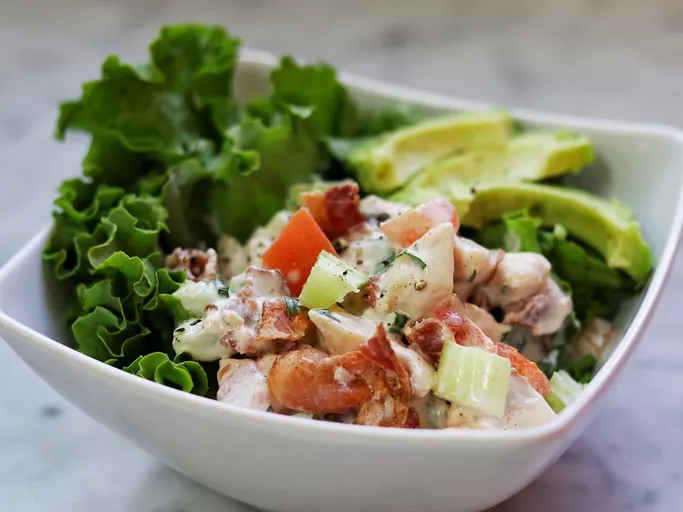

Chicken salad

Description
This chicken salad is dressed with a lemony mayonnaise and served over crisp lettuce leaves.
Ingredients
- 5 slices bacon
- 3/4 cup mayonnaise
- 2 tablespoons minced green onion
- 1 tablespoon chopped parsley
- 1 teaspoon lemon juice
- 1 dash Worcestershire sauce
- salt and ground black pepper to taste
- 3 cups diced cooked chicken
- 1 cup chopped fresh tomato
- 2 stalks celery, thinly sliced
- 12 leaves romaine lettuce
- 1 large avocado, sliced
Steps
- Cook bacon in a large skillet and over medium-high heat, turning occasionally, until evenly browned and
crispy, about 10 minutes. Drain on paper towels and crumble when cool enough to handle.
- Whisk mayonnaise, green onion, parsley, lemon juice, Worcestershire sauce, salt, and black pepper together
in a bowl until smooth.
- Stir chicken, tomato, and celery together in a bowl. Add crumbled bacon; pour mayonnaise dressing over top
and toss to coat. Cover and refrigerate until chilled, at least 30 minutes.
- When ready to serve, remove from the refrigerator and stir. Serve over romaine lettuce leaves and garnish
with avocado slices.